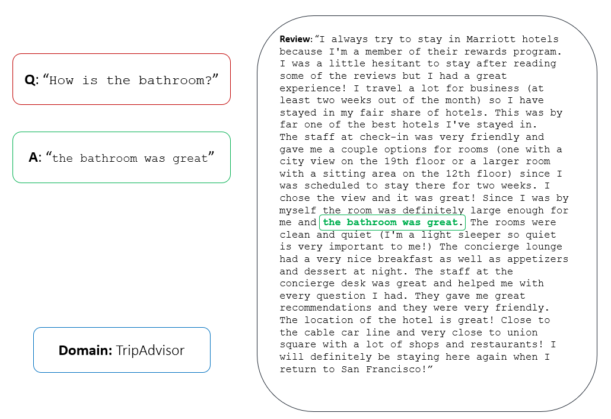
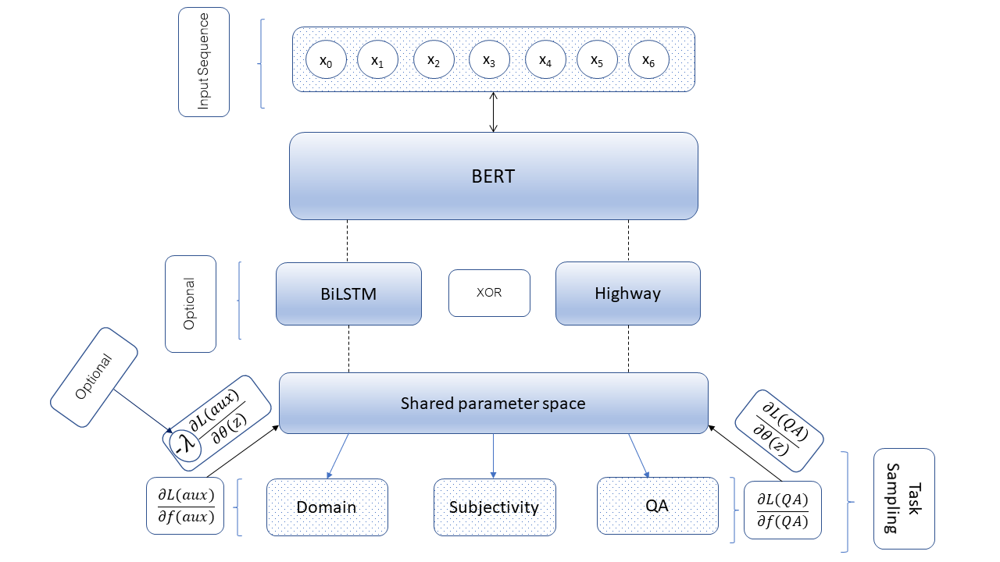
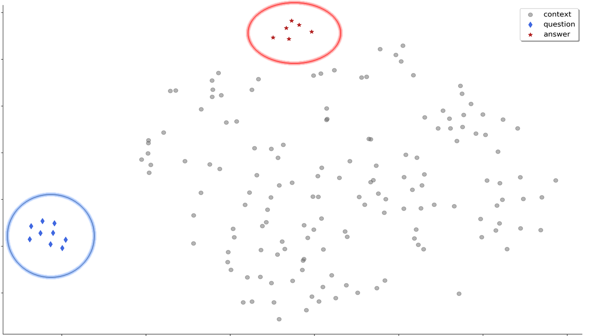

Subjective Question Answering
Have you ever wondered how machines answer questions? In my master’s thesis I’ve delved deeper into the realm of (subjective) QA. The following lines should provide a high-level overview, and give you glimpse into the research I’ve conducted over the last couple of months.
The Task
Frequently we humans would like to know, whether a particular restaurant is recommendable, how the actors in a movie played their parts, or which of the affordable hotels we should book given that we prefer it to be romantic. It instantaneously becomes clear that such questions cannot be answered with objective, measurable facts. They require some piece of subjective opinion. How do we get that piece? Firstly, we need a review paragraph of a customer who has provided insight into what we want to know. This paragraph is a long sequence of words of which some hold the opinion we are looking for. Thus, we secondly need the start and end positions of the answer span that is deemed correct. The latter is annotated as such by human crowd-workers; otherwise we cannot train a machine learning algorithm to automatically detect answer spans in previously unseen reviews. The following figure depicts a high-level overview of the task.

Great. Now we know how QA works, and what pieces of text are needed. Let’s assume we have searched the internet for reviews that correspond to all questions we want to be answered for our next holiday trip. Let’s further assume that some scientists have payed human crowd-workers to investigate the reviews and annotate most reviews with answer spans they consider to be correct. Hold on. Most reviews? We seek answers to each of our questions, not just to most of them.
Unfortunately, science suffers from a lack of money since its birth, and hence cannot pay to find the appropriate answer spans in all reviews. (Humans have indeed many (!) questions for a single holiday trip.) We are too lazy to search for the answers ourselves. What a waste of time would that be?! Instead, we simply build a machine learning algorithm to do this for us. Neural nets are in vogue and perform better than other statistical models. So, let’s build a neural net. Note that neural nets are not fancier than other pattern recognition methods. They are nothing other than linear transformations that map the input data X - which in our case are sequences of words - into a high-dimensional space Z to filter for the most crucial features in the data. What makes them so useful and easy to deploy is not their "intelligence" but rather their differentiability. Neural nets are differentiable, smooth functions whose derivatives can be computed at each point. Thus, an error can easily be backpropagated into the model to yield a change for its next attempt to understand the data. In a stochastic process, we can update their weights as often as necessary to attend to the most important words, and ignore the rest. Thanks to the aforementioned scientists, we have got lots of training data with which we can optimize our net. Recall that we have asked many questions!
The Model
This holiday is our first in a long time (Covid-19 has gotten to all of us). Thus, we want the answers to be as accurate as possible. Since we have majored in Computer Science, and did our minor in Neuroscience, we have got an idea. We remember from our neuroscience class back in the days that the human brain is adept in the transfer of knowledge across tasks, and never learns things in isolation. The human brain comprehends tasks in context through the acquisition of diverse information with respect to its environment. Therefore, it would not make sense to solely train the net on answering questions; otherwise it might not generalise well to a different set of questions. Note, however, that artificial neural nets do not even come close to the human brain in learning about the world, but we still try our bests to make them a little smarter. The reviews we have gathered belong to six different domains, namely books, electronics, grocery, movies, restaurants, TripAdvisor. (I know, we seek answers to questions about many different areas.) There might be useful information in the various domains that could help the neural net to easier find an answer. Hence, we also optimize our algorithm on the task of classifying the reviews into their corresponding domains. This is called multi-way classification. We let our neural net perform multiple tasks at the same time. We want it to classify the reviews into their respective domains, make it learn the difference between a subjective opinion and an objective, measurable fact, and, most crucially, answer our questions. This should ultimately increase performance on the main task, QA. Such a "multi-task" neural architecture looks as follows. We have called our neural net BERT since we were a big fan of the sesame street back in our childhood, and like to give machines names.

Let the training begin. We train for a couple of epochs, then we test our neural net on unseen reviews. We seem to get useful answers. An oracle tells us that approximately 80% of them are correct. What about the remaining 20% though? They are completely off, we reckon. How did that happen? Recall that QA is not an easy task. We ask a diverse set of questions and want the neural net to find the correct answer in an enormously long sequence of words. Also, we don't give it much time to do this. Since we are curious beings, we investigate what happened along the way. Why are most answers correct, and some wrong? We realize a couple of things. Questions that start with how or belong to the domain TripAdvisor appear to be the most difficult across the board. (Don’t trust the TripAdvisor reviews!)
Latent space
However, this does not tell us anything about the inner workings of our net. We investigate the hidden representations of the model at each of its layers. You can think of layers as stages of processing (similarly to the human brain, but definitely not the same). Early layers reflect low-level representations such as syntactic features, final layers encode high-level information such as the contextual meaning of a word. We find an interesting pattern. Whenever our neural net got a question right, the hidden representations corresponding to the correct answer tokens are both separated from the context and clustered closely, but only in final layers where more abstract information is encoded. For simplicity, this is shown in 2D space (see Figure below).

Conversely, whenever the neural net incorrectly responded to a question, the answer token representations were clustered together with the context, showing no separation whatsoever. We suppose that this knowledge might conveniently be leveraged to predict (with another, smaller and simpler neural net) whether our QA model will respond correctly or not. One could say that one net is looking into the "brain" of the other, and is seeking for an error while it is processing. Again, this is just nomenclature to make it easier to understand what is going on. Those are of course not actual brains. If this is indeed possible, we could skip the questions for which the QA model cannot find the correct answer span, and either look for an answer ourselves or pay – in a similar fashion to the scientists above – someone else to do this, or maybe we just stop caring about those questions and are satisfied with the set of correct ones.
We could even create more training data. Whenever our small neural net predicts a correct answer by the QA neural net, we could consider this answer to be correct and expand our training corpus. Since we know that it’s all about the data (not only the amount but more so about the quality), we suspect that the accuracy of our QA model will be enhanced with more training examples; hence, alleviating the need for human labellers and saving us lots of time. However, for this holiday trip we are satisfied with the current results. The combinatory approach including the small neural net that is meant to predict the behaviour of the QA model, will be deployed for our next journey which will be a longer and more adventurous trip. Gosh, so many questions are ahead of us. We really need two neural nets working together. Let's first conduct experiments and write a paper about this, before we plan our next trip...
[Master's thesis]Contagious times: a letter of hope
Covid-19 is highly contagious. That’s a given fact. All of us know about it. We need to self-isolate, practice social distancing, be more hygienic and cautious than ever before. Whoever has doubts about the latter is very much denying reality. There is, however, something else that’s utterly contagious. Thoughts. Although the vast majority of us is currently spending most of our times at home, not seeing any of our beloved ones, we exchange thoughts, fears, perspectives about the world more frequently than usually. Any emotion, any thought, any view is, as we know from neuroscience, contagious. The latter holds even more so for times full of uncertainty, times such as these. We make predictions about post-corona times. We estimate the likelihood not only of how long the current situation will last, but also of humanities’ behaviour after the pandemic. Currently, we are forced into a life centred around minimalism. Consumption, flying, partying, eating out - among many other recreational activities - are put on hold. We must live as if the possibility of moving across borders, living a life outside of home does not exist. Although this is reality, it sounds and indeed feels surreal. The situation is one that is utterly new. I for myself have never experienced anything similar, and I suppose most of you did not either.
With it comes one question we have to reflect upon: Is it at all that bad? Let’s try to perceive the positive side-effects of all of this. There is one big beneficiary. The environment. Never before did humanity and animal kingdom inhale such fresh air. Never before have waterways across Europe been that clean. Never before have CO2 emissions across the globe been that low.
I hear people having conversations about potential *rebound effects*. That is, that after the crisis humanity will go back to the state before the crisis or a life with even higher consumption and travel rates, without integrating anything into their (future) daily lives that humanity is currently forced to practice. I doubt it. I am not that pessimistic. Recall that thoughts, fears, and views about the world are contagious. If we frequently tell ourselves and others that a rebound effect will happen, and humanity won’t learn anything at all, the odds are in fact high that this will happen. This is called nothing other than a self-fulfilling prophecy. However, if we trust in humans’ ability to change, flip the coin and rather believe that our brains, lazy as they are, will get used to lives without mass consumption, without enormous travel rates, simply lives with less, chances are high that post-corona times will be brighter than pre-corona times.
I as someone who believes in nothing but the evidence have hope. Hope, one of the mightiest thoughts, is contagious. Perhaps, hope is more contagious than Covid-19. There’s one huge difference though between hope and Covid-19: influence. We cannot exert an influence on how contagious Covid-19 is on our immune system, but we can most definitely influence how contagious hope is on our collective brain system. It’s darn simple: we just need to share it. If we all believe in the possibility that we will take away many of corona’s lessons, and grasp the opportunity to finally make a change, the rebound effect will become out of sight. Sure, many of us will go back to “normal” after the crisis. It’s not about the many though. It’s about the few who infect each other with positivity and thoughtfulness, who believe in a life that embraces minimalism rather than profligacy.
Are accuracy scores and SOTA all we care about?
If one takes a glance at the leaderboards in the realms of Computer Vision and NLP (e.g., GLUE, SuperGLUE, WikiSQL), then one can quickly infer that high accuracies (or F1 scores) are paramount to the field. Not only leaderboards, also the content and tone of accepted papers at major academic venues indicate that state-of-the-art (SOTA) results are what conferences and journals care most about. I get and suppose, that we should always aim at building more accurately performing systems. However, shouldn’t academia ALSO be about the methodology and creativity, or the intention (e.g., curing a disease, supporting the fight against climate change) behind an algorithmic approach? Universities that are not named MIT, CMU, Stanford, Harvard, Toronto, Oxbridge, etc., can barely keep up with the tech industry in the (fast-paced) development of best performing systems, mainly due to a lack of money and resources, and not a shortage of brains or creative thinking. To train bigger neural networks, one needs access to dozens of strong GPUs or TPUs. Without money, that’s rather a daunting endeavour. I strongly believe, that we as a field, and academia in general should aim at collaboration across the board (especially with universities that don’t have the money and resources to stay in the game), highlight work that got accepted even without having achieved SOTA results or access to the strongest GPUs, underline the grueling work reseachers have been through to write paper X, support the small and unseen. Academia should not become just a profit or SOTA oriented business. I know, we shall collaborate tightly with industry, which is definitely not a bad thing at all (I am actually an advocate of the latter), but let’s reflect again upon the core values of science, which are, as far as I am concerned, creativity, out-of-the-box thinking, rigorous methodology, problem-solving, and in particular collaboration.